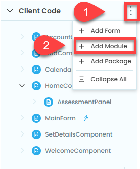
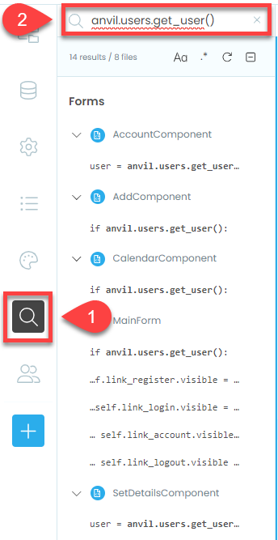

Reduce Remote Database Access¶
To implement caching in our web app we need to create a variables in the frontend to store our data variables. These data will need to be accessed by multiple frontend modules. Best practice for storing cached data is in it’s own module. So that’s what we will do.
Create Data Access Module¶
We have previously made a server module, but this module will be made client-side, since the data needs to be stored in the frontend. To be precise, it will be stored in the user’s browser.
In the files menu
Click on the Client Code ellipses
Then choose Add Module
Name the module data_access

Clean up the module by deleting everything except the imports.

Cached User¶
We can now cache the user data. The idea is the front end will ask this module for the user data. If the data is saved in the variable, this module will return it. If there is no data in the variable, this module will retrieve it from the database, store the data for later user and then return the user data to the frontend.
First we need to create a variable to store the user data.
copy the code below into the data_access module.
7# cached values
8__user = None
Code explaination
line 7 → a comment to help structure the code
line 8 → creates the variable we will use to store the user data
Dunder variables
In Python, we use double underscores before a variable (like __variable) for variables that can meant to be only used by the module they are in. This is called making them variable private to the module it’s in.
Doing this means the variable cannot be easily accessed or changed from outside the module. This is important because it makes sure that important parts of your code can’t be accidentally messed up.
Now we need to make a function that the frontend will use instead of anvil.users.get_user().
Add the highlighted code to the bottom of the data_access module.
10def the_user():
11 global __user
12
13 if __user:
14 print("Using cached user")
15 return __user
16
17 print("Accessing user from database")
18 __user = anvil.users.get_user()
19 return __user
Code explaination
line 10 → creates the function the_user
line 11 → makes the
__userglobal, which allows this function to edit itline 13 → checks to see if there is any data stored in
__user. Note__userstarts with the valueNonewhich isFalseline 14 → lets us know when the program is using cached user data
line 15 → returns the user data to the frontend (this will end the function if there is user data)
line 17 → lets us know when the program is retrieving user data from the backend
line 18 → gets current user data and stores it in the
__uservariableline 19 → returns the user data to the frontend
We now have our caching user function, next we have to add it to our code
Refactor Code¶
Remember when we created the switch_component and we searched for code and replaced it. We will use that process now.
Click on the search icon in the side menu
Search for
anvil.users.get_user()

You can see that five components have a call to anvil.users.get_user(). lets work through those from top to bottom.
AccountComponent¶
First component on our list is the AccountComponent.
Open the AccountComponent in Code mode
In the import section add the following highlighted line
1from ._anvil_designer import AccountComponentTemplate
2from anvil import *
3import anvil.server
4import anvil.tables as tables
5import anvil.tables.query as q
6from anvil.tables import app_tables
7import anvil.users
8from .. import data_access
Code explaination
line 8 → allows AccountComponent to use the data_access module
We need to get rid of the anvil.users.get_user() in line 17
In the
__init__change line 17 to the highlighted code below
12 def __init__(self, **properties):
13 # Set Form properties and Data Bindings.
14 self.init_components(**properties)
15
16 # Any code you write here will run before the form opens.
17 user = data_access.the_user()
18 self.label_first_name.text = user["first_name"]
19 self.label_last_name.text = user["last_name"]
Code explaination
line 17 → uses our new the_user function to retrieve user data
Check that the AccountComponent is no longer in the search results, and then move onto the next one.
AddComponent¶
Next in our search results is the AddComponent
Open AddComponent in Code mode.
Add data_access to the import section
1from ._anvil_designer import AddComponentTemplate
2from anvil import *
3import anvil.server
4import anvil.tables as tables
5import anvil.tables.query as q
6from anvil.tables import app_tables
7import anvil.users
8from .. import data_access
Code explaination
line 8 → allows AccountComponent to use the data_access module
We need to get rid of the anvil.users.get_user() in line 22
In the
__init__change line 22 to the highlighted code below
12 def __init__(self, **properties):
13 # Set Form properties and Data Bindings.
14 self.init_components(**properties)
15 self.subject = ""
16 self.details = ""
17 self.start = None
18 self.due = None
19
20 # Any code you write here will run before the form opens.
21 self.label_message.visible = False
22 if data_access.the_user():
23 self.card_details.visible = True
24 self.card_error.visible = False
25 self.button_add.visible = True
26 else:
27 self.card_details.visible = False
28 self.card_error.visible = True
29 self.button_add.visible = False
Code explaination
line 22 → uses our new the_user function to retrieve user data
Check the AddComponent is no longer in your search results, then onto the next one.
CalendarComponent¶
The next module we need to change is the CalendarComponent.
Open CalendarComponent in Code mode.
Add data_access to the import section
1from ._anvil_designer import CalendarComponentTemplate
2from anvil import *
3import plotly.graph_objects as go
4import anvil.server
5import anvil.tables as tables
6import anvil.tables.query as q
7from anvil.tables import app_tables
8import anvil.users
9from .. import data_access
Code explaination
line 9 → allows AccountComponent to use the data_access module
Once again we need to remove of the anvil.users.get_user() from the __init__
In the
__init__change line 18 to the highlighted code below
13 def __init__(self, **properties):
14 # Set Form properties and Data Bindings.
15 self.init_components(**properties)
16
17 # Any code you write here will run before the form opens.
18 if data_access.the_user():
19 self.card_details.visible = True
20 self.card_error.visible = False
21 self.load_chart()
22 else:
23 self.card_details.visible = False
24 self.card_error.visible = True
Code explaination
line 18 → uses our new the_user function to retrieve user data
If CalendarComponent is no longer in your search results time to move on.
SetDetailsComponent¶
I know that MainForm is next in our search results, but we’ll come back to that, since SetDetailsComponent is pretty much the same as the all the other components.
Open SetDetailsComponent in Code mode.
Add data_access to the import section
1from ._anvil_designer import SetDetailsComponentTemplate
2from anvil import *
3import anvil.server
4import anvil.tables as tables
5import anvil.tables.query as q
6from anvil.tables import app_tables
7import anvil.users
8from .. import data_access
Code explaination
line 8 → allows AccountComponent to use the data_access module
Remove of the anvil.users.get_user() from the __init__
In the
__init__change line 17 to the highlighted code below
12 def __init__(self, **properties):
13 # Set Form properties and Data Bindings.
14 self.init_components(**properties)
15
16 # Any code you write here will run before the form opens.
17 user = data_access.the_user()
18 if user["first_name"]:
19 self.text_box_first_name.text = user["first_name"]
20 if user["last_name"]:
21 self.text_box_last_name.text = user["last_name"]
Code explaination
line 17 → uses our new the_user function to retrieve user data
Now, the only form in our search should be MainForm, so time to move onto that.
MainForm¶
In the MainForm we have a number of instances of anvil.users.get_user(). We will have to replace each one, but before we do, we need to import data_access
Open MainForm in Code mode
Add the highlighted code to the end of the import section
1from ._anvil_designer import MainFormTemplate
2from anvil import *
3import anvil.server
4import anvil.tables as tables
5import anvil.tables.query as q
6from anvil.tables import app_tables
7import anvil.users
8from ..HomeComponent import HomeComponent
9from ..CalendarComponent import CalendarComponent
10from ..AddComponent import AddComponent
11from ..AccountComponent import AccountComponent
12from ..SetDetailsComponent import SetDetailsComponent
13from ..WelcomeComponent import WelcomeComponent
14from .. import data_access
Code explaination
line 14 → allows AccountComponent to use the data_access module
Our first call to anvil.users.get_user() occurs in the switch_component method.
Change the highlighted code in the switch_component method.
26 def switch_component(self, state):
27 # set state
28 if state == "home":
29 if data_access.the_user():
30 cmpt = HomeComponent()
31 else:
32 cmpt = WelcomeComponent()
33 breadcrumb = self.breadcrumb_stem
Code explaination
line 29 → uses our new the_user function to retrieve user data
The remaining four calls to anvil.users.get_user() are in the set_active_link method.
Change the four highlighted lines below:
53 def set_active_link(self, state):
54 if state == "home":
55 self.link_home.role = "selected"
56 else:
57 self.link_home.role = None
58 if state == "add":
59 self.link_add.role = "selected"
60 else:
61 self.link_add.role = None
62 if state == "calendar":
63 self.link_calendar.role = "selected"
64 else:
65 self.link_calendar.role = None
66
67 self.link_register.visible = not data_access.the_user()
68 self.link_login.visible = not data_access.the_user()
69 self.link_account.visible = data_access.the_user()
70 self.link_logout.visible = data_access.the_user()
Code explaination
lines 67 - 70 → use our new the_user function to retrieve user data
Now, the only modules in our search results should be data_access and server modules.
Time to test.
Testing¶
Launch your web app and navigate to all the pages we change:
Account Page
Add Page
Calendar Page
Set Details Page
Home Page
Logout
Are things notably faster?
Problems¶
You will notice that there are some problems with:
Logging out
Updating user details
You will also notice that pages that load assessment data are still slow.
We will fix these problems in the next three tutorials.
Final code state¶
By the end of this tutorial your code should be the same as below:
Final MainForm¶
1from ._anvil_designer import MainFormTemplate
2from anvil import *
3import anvil.server
4import anvil.tables as tables
5import anvil.tables.query as q
6from anvil.tables import app_tables
7import anvil.users
8from ..HomeComponent import HomeComponent
9from ..CalendarComponent import CalendarComponent
10from ..AddComponent import AddComponent
11from ..AccountComponent import AccountComponent
12from ..SetDetailsComponent import SetDetailsComponent
13from ..WelcomeComponent import WelcomeComponent
14from .. import data_access
15
16
17class MainForm(MainFormTemplate):
18 def __init__(self, **properties):
19 # Set Form properties and Data Bindings.
20 self.init_components(**properties)
21 self.breadcrumb_stem = self.label_title.text
22
23 # Any code you write here will run before the form opens.
24 self.switch_component("home")
25
26 def switch_component(self, state):
27 # set state
28 if state == "home":
29 if data_access.the_user():
30 cmpt = HomeComponent()
31 else:
32 cmpt = WelcomeComponent()
33 breadcrumb = self.breadcrumb_stem
34 elif state == "account":
35 cmpt = AccountComponent()
36 breadcrumb = self.breadcrumb_stem + " - Account"
37 elif state == "add":
38 cmpt = AddComponent()
39 breadcrumb = self.breadcrumb_stem + " - Add"
40 elif state == "calendar":
41 cmpt = CalendarComponent()
42 breadcrumb = self.breadcrumb_stem + " - Calendar"
43 elif state == "details":
44 cmpt = SetDetailsComponent()
45 breadcrumb = self.breadcrumb_stem + " - Account - Set Details"
46
47 # execution
48 self.content_panel.clear()
49 self.content_panel.add_component(cmpt)
50 self.label_title.text = breadcrumb
51 self.set_active_link(state)
52
53 def set_active_link(self, state):
54 if state == "home":
55 self.link_home.role = "selected"
56 else:
57 self.link_home.role = None
58 if state == "add":
59 self.link_add.role = "selected"
60 else:
61 self.link_add.role = None
62 if state == "calendar":
63 self.link_calendar.role = "selected"
64 else:
65 self.link_calendar.role = None
66
67 self.link_register.visible = not data_access.the_user()
68 self.link_login.visible = not data_access.the_user()
69 self.link_account.visible = data_access.the_user()
70 self.link_logout.visible = data_access.the_user()
71
72 # --- link handlers
73 def link_home_click(self, **event_args):
74 self.switch_component("home")
75
76 def link_calendar_click(self, **event_args):
77 self.switch_component("calendar")
78
79 def link_add_click(self, **event_args):
80 self.switch_component("add")
81
82 def link_account_click(self, **event_args):
83 """This method is called when the link is clicked"""
84 self.switch_component("account")
85
86 def link_register_click(self, **event_args):
87 anvil.users.signup_with_form(allow_cancel=True)
88 self.switch_component("details")
89
90 def link_login_click(self, **event_args):
91 anvil.users.login_with_form(allow_cancel=True)
92 self.switch_component("home")
93
94 def link_logout_click(self, **event_args):
95 anvil.users.logout()
96 self.switch_component("home")
Final AccountComponent¶
1from ._anvil_designer import AccountComponentTemplate
2from anvil import *
3import anvil.server
4import anvil.tables as tables
5import anvil.tables.query as q
6from anvil.tables import app_tables
7import anvil.users
8from .. import data_access
9
10
11class AccountComponent(AccountComponentTemplate):
12 def __init__(self, **properties):
13 # Set Form properties and Data Bindings.
14 self.init_components(**properties)
15
16 # Any code you write here will run before the form opens.
17 user = data_access.the_user()
18 self.label_first_name.text = user["first_name"]
19 self.label_last_name.text = user["last_name"]
20
21 def button_edit_click(self, **event_args):
22 main_form = get_open_form()
23 main_form.switch_component("details")
Final AddComponent¶
1from ._anvil_designer import AddComponentTemplate
2from anvil import *
3import anvil.server
4import anvil.tables as tables
5import anvil.tables.query as q
6from anvil.tables import app_tables
7import anvil.users
8from .. import data_access
9
10
11class AddComponent(AddComponentTemplate):
12 def __init__(self, **properties):
13 # Set Form properties and Data Bindings.
14 self.init_components(**properties)
15 self.subject = ""
16 self.details = ""
17 self.start = None
18 self.due = None
19
20 # Any code you write here will run before the form opens.
21 self.label_message.visible = False
22 if data_access.the_user():
23 self.card_details.visible = True
24 self.card_error.visible = False
25 self.button_add.visible = True
26 else:
27 self.card_details.visible = False
28 self.card_error.visible = True
29 self.button_add.visible = False
30
31 def button_add_click(self, **event_args):
32 # validation
33 if not self.text_box_subject.text:
34 self.display_error("Subject name needed")
35 elif not self.text_box_details.text:
36 self.display_error("Assessment details needed")
37 elif not self.date_picker_start.date:
38 self.display_error("Start date needed")
39 elif not self.date_picker_due.date:
40 self.display_error("Due date needed")
41 else:
42 self.subject = self.text_box_subject.text
43 self.details = self.text_box_details.text
44 self.start = self.date_picker_start.date
45 self.due = self.date_picker_due.date
46 self.display_save(f"{self.subject} {self.details} assessment: {self.start} to {self.due} recorded")
47 anvil.server.call('add_assessment', self.subject, self.details, self.start, self.due)
48 self.reset_form()
49
50 def display_error(self, message):
51 self.label_message.visible = True
52 self.label_message.foreground = "#ff0000"
53 self.label_message.icon = "fa:exclamation-triangle"
54 self.label_message.bold = True
55 self.label_message.text = message
56
57 def display_save(self, message):
58 self.label_message.visible = True
59 self.label_message.foreground = "#000000"
60 self.label_message.icon = "fa:save"
61 self.label_message.bold = False
62 self.label_message.text = message
63
64 def reset_form(self):
65 self.subject = ""
66 self.details = ""
67 self.start = None
68 self.due = None
69 self.text_box_subject.text = ""
70 self.text_box_details.text = ""
71 self.date_picker_start.date = None
72 self.date_picker_due.date = None
Final CalendarComponent¶
1from ._anvil_designer import CalendarComponentTemplate
2from anvil import *
3import plotly.graph_objects as go
4import anvil.server
5import anvil.tables as tables
6import anvil.tables.query as q
7from anvil.tables import app_tables
8import anvil.users
9from .. import data_access
10
11
12class CalendarComponent(CalendarComponentTemplate):
13 def __init__(self, **properties):
14 # Set Form properties and Data Bindings.
15 self.init_components(**properties)
16
17 # Any code you write here will run before the form opens.
18 if data_access.the_user():
19 self.card_details.visible = True
20 self.card_error.visible = False
21 self.load_chart()
22 else:
23 self.card_details.visible = False
24 self.card_error.visible = True
25
26 def load_chart(self):
27 fig = anvil.server.call('get_chart')
28
29 # Assign the Plotly figure to the Anvil Plot component
30 self.plot_timeline.figure = fig
Final SetDetailsComponent¶
1from ._anvil_designer import SetDetailsComponentTemplate
2from anvil import *
3import anvil.server
4import anvil.tables as tables
5import anvil.tables.query as q
6from anvil.tables import app_tables
7import anvil.users
8from .. import data_access
9
10
11class SetDetailsComponent(SetDetailsComponentTemplate):
12 def __init__(self, **properties):
13 # Set Form properties and Data Bindings.
14 self.init_components(**properties)
15
16 # Any code you write here will run before the form opens.
17 user = data_access.the_user()
18 if user["first_name"]:
19 self.text_box_first_name.text = user["first_name"]
20 if user["last_name"]:
21 self.text_box_last_name.text = user["last_name"]
22
23 def button_save_click(self, **event_args):
24
25 if self.text_box_first_name.text == "":
26 self.label_error.text = "First name cannot be blank"
27 self.label_error.visible = True
28 return
29
30 if self.text_box_last_name.text == "":
31 self.label_error.text = "Last name cannot be blank"
32 self.label_error.visible = True
33 return
34
35 self.label_error.visible = False
36 anvil.server.call("update_user",
37 self.text_box_first_name.text,
38 self.text_box_last_name.text)
39
40 main_form = get_open_form()
41 main_form.switch_component("account")